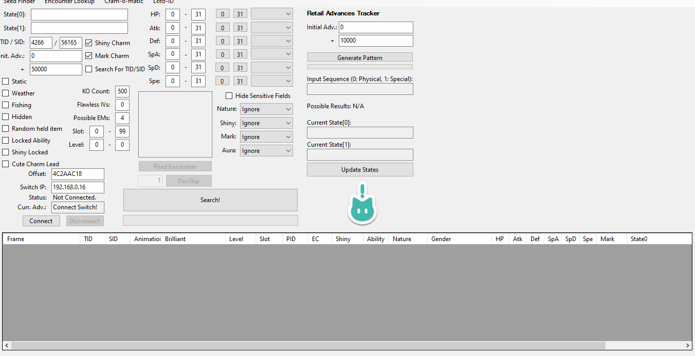
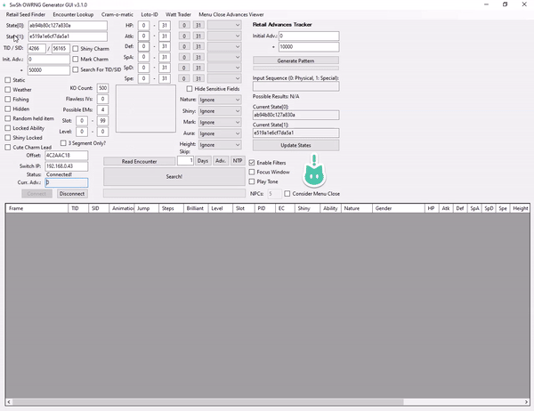
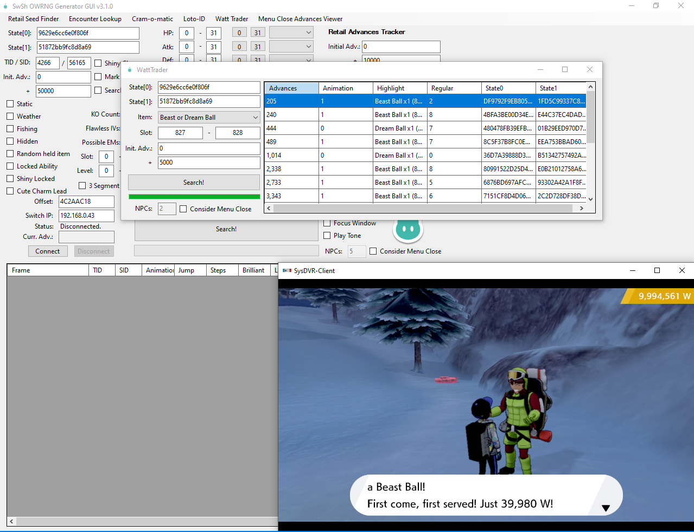

{kind=link}

This guide will cover the process of RNG abusing item machines (Cram-o-Matic, Rotom Lottery) and NPCs (Watt Trader) in Sword/Shield, using the SWSH Overworld RNG Generator by LegoFigure11. Item RNG abuse is best utilized to help players obtain rare/valuable items such as rare Pokeballs.
From here this guide assumes you are using a CFW Switch console running Atmosphere.
Click here if you are using a unmodified Switch console!SWSH_OWRNG_Generator_GUI.zip into an empty folder on your PC in a known location.ldn-mitm.zip & Luxray.zip into the same folder as the above.atmosphere & switch folder inside this folder. Drag these folders to the root of your Switch SD card.SWSH_OWRNG_Generator_GUI tracks the current RNG state and the number of advancements since connecting to the program. The RNG state advances naturally based on your location, the weather, and the number of NPCs present or active.
Different in-game actions can also be used to advance the RNG state with varying influence, the most useful actions can be found in the table directly below.
| Type of action | Description of action | Adv. influence |
|---|---|---|
| Player Movement | Moving the player using the control stick, then letting the control stick fall back into it's resting state. This Includes whistle and bike bell. |
1-3 Advancements per input. |
| Menu Close | Opening and closing the pause menu using the X button. |
Varying depending on location and environment, predictable (explained below). |
| NPC Activation | Standing near an NPC to make them notice the player. Moving away from an NPC will cause them to "deactivate". Useful for covering short distances quickly. |
~2500 advancements per minute. |
| Animations/Motions | Having your Pokémon animate on the summary screen or party menu by clicking in the L3 button, or by using the Skip feature. |
+1 advancement per animation on the individual Pokémon summary screen. +1 advancement per button input on the party summary screen. |
| Date Skipping | Using Luxray or the Skip feature of the GUI to advance towards targets, this is the quickest way to advance frames. |
Variable influence based on the amount of Pokémon stored inside boxes, up to 15,000~ per day skipped. |
The Menu Close Advances Viewer window predicts the number of advancements that occur when closing the pause menu. This action also temporarily freezes the RNG state, making it easier to hit target frames consistently due the window of "silence".
Your NPC count may need calibrating if the above values are not aligning with your experience. You can find a tutorial for manual calibration in the dropdown menu below.
Using the Consider menu close feature in any of the sub windows, the output will indicate the frame to close the pause menu on, not the frame to interact with the NPC or Machine. This should align you directly with your target frame, allowing you to interact with the machine or NPC at this stage to lock in your item during the window of silence mentioned above.
X button on your controller to open the pause menu, then disconnect and reconnect to the main window. This will ensure the number inside the Curr. Adv remains at 0.Menu Close Advances Viewer button at the top of the main window to open a smaller window. Your seeds should be visible in the correct fields.Init Adv. field. If the above steps were closely followed, this number should be 0.NPCs field and search. Gradually increase this number by 1 until you find a match. Repeat this step a few times to ensure the advancement predictions are accurate.You can automate the date-skipping process using CFW, which is useful for advancing large distances, and is also a requirement for RNG abusing the Watt Trader in Snowslide Slope. Date and Time must be synced via the internet in the Switch system settings to use this feature.
The number of frames advanced by date-skipping varies depending on the number of Pokémon in your boxes. Fill your boxes with Pokémon (NOT EGGS) to maximize this feature. Track the rough amount of frame advancements per day skipped to avoid overshooting target frames.
Luxray is a calculator-style application that can be launched through the Switch Homebrew Menu. It has a variety of features, such as:
To skip using SWSH_OWRNG_Generator_GUI, type the number into the Skip, then click the Days button. You will need to wait for the countdown to finish before attempting to day-skip again.
This method does not include an NTP function, you will also need to set the correct weather condition after finishing the date skipping process. This can be done safely by changing the date backwards until the correct weather conditions have been met. Changing the date backwards will not cause unwanted advancements.
With all the required reading out of the way, let's get into it! Click one of the below links to jump to the section that applies to you.
The goal is to interact with the Cram-o-Matic machine on the calculated target frame given to us by the Cram-o-Matic window of the generator, we will be using the advancement methods listed in the table above to hit the target frame, most notably, menu close, animations & date skipping.
In this example we will be aiming for a 5 Level Balls. You can be more specific with the filters if you wish, such as filtering for a specific rare items.
Figure 1 - Tool setup Awesome, everything looks good! We can see our current seeds on the Cram-o-Matic tab and have our filters set properly. Time to stand near the Cram-o-Matic machine in-game!
X button to pause the game.Cram-o-Matic tab.Search button to check for desirable target frames.If you do not find a suitable target frame, save and restart the game, then repeat the above process until a target has been found.
We found a target frame! 5 Level Balls on advance 795. This is the advancement that we will aim to interact with the Cram-o-Matic machine on as there is no delay to account for in this case.
First you will need to calibrate the amount of NPCs in the area. Using the above mentioned method, we calculated that there are 21 NPCs inside the Dojo. This number is consistent even when resetting the game, but subject to change based on story progression.
date skipping (large distances) or menu close + animations (small distances)A button press.X button, then disconnect and reconnect to the GUI, alternatively you can press the Update States button inside the main window for the same effect.Cram-o-Matic sub window to apply the newly updated RNG state, then search your target again. Take note of the new target frame and close/minimize the sub window.From this point it's recommended to only usemenu close&amimationadvancements as they advance in small increments, making them easy to keep track of.
Menu Close Advances Viewer sub window, then enter the amount of NPCs (calibrated earlier) into the NPCs field, and target frame into the + field.Search, if your target seed is visible, great! If you cannot see your target, you will need to use animation advancements to nudge the RNG state until the result is visible (see next 2 steps, ignore if target frame is already visible).Menu Close Advances Viewer sub window to reflect the updated states.In rare cases, your target frame will not be visible at all, this means you cannot hit your target using menu close prediction by itself. Instead, aim to get as close as you can using menu close prediction, then use player movement advancements to hit your target seed instead.
Curr. Adv field of the main window to avoid overshooting your target.Remember, the goal is to interact with the machine on the correct frame, as long as you hit your target seed and stayed within the dialogue without backing out, you will achieve your desired result.

The result matches the output given by the Cram-o-Matic sub window, mission accomplished! We got 5 Level Balls from the Cram-o-Matic machine on the first attempt!
That's all there is to RNG abusing the Cram-o-Matic!
The goal is to interact with the Rotom PC in the PokeCenter on the calculated target frame given to us by the Loto-ID window of the generator to obtain a Master Ball. We will be using the advancement methods listed in the table above to hit the target frame, most notably, menu close, animations & date skipping.
Loto-ID.txt is a text file that comes with the program, which can be used to output results based on a list of TIDs. The Rotom lottery game reads the TIDs of all the Pokemon inside your boxes, so if you have Pokemon stored in your boxes from multiple save files, you may find it helpful to create a list of TIDs to increase your odds of finding a result.
Awesome, everything looks good! We can see our current seeds on the Loto-ID tab and have our filters set properly. Time to stand near the PC in-game! In this example the player is stood next go the PC in Wedgehurst PokeCenter.
X button.Loto-ID tab.Search button and check for desirable target frames.If you do not find a suitable target frame, save and restart the game, then repeat the above process until a target has been found.
We found a target frame! A Master Ball on advance 806-808. This is the advancement that we will aim to interact with the PC on, as there is no delay to account for in this case.
First you will need to calibrate the amount of NPCs in the area, using the above mentioned method, we calculated that there are 7 NPCs inside Wedgehurst PokeCenter. This number is consistent even when resetting the game, but subject to change based on the PokeCenter you are currently in.
date skipping (large distances) or menu close + animations (small distances)A button press.X button, then disconnect and reconnect to the GUI, alternatively you can press the Update States button inside the main window for the same effect.Loto-ID sub window to apply the newly updated RNG state, then search your target again. Take note of the new target frame.From this point it's recommended to only usemenu close&amimationadvancements as they advance in small increments, making them easy to keep track of.
Consider menu close checkbox. Now enter your target frame into the + field.Search, if your target seed is visible, great! If you cannot see your target, you will need to use animation advancements to nudge the RNG state until the result is visible (see next 2 steps, ignore if target frame is already visible).Menu Close Advances Viewer sub window to reflect the updated states.In rare cases, your target frame will not be visible at all, this means you cannot hit your target using menu close prediction by itself. Instead, aim to get as close as you can using menu close prediction, then use player movement advancements to hit your target seed instead.
Curr. Adv field of the main window to avoid overshooting your target.Remember, the goal is to interact with the machine on the correct frame, as long as you hit your target seed and stayed within the dialogue without backing out, you will achieve your desired result.
The result matches the output given by the Loto-ID sub window, mission accomplished! We got a Master Ball from the lottery on the first attempt!
That's all there is to RNG abusing the Rotom lottery minigame!
The goal is to interact with the Watt Trader in Snowslide Slope on the calculated target frame given to us by the Watt Trader window of the generator, we will be using the advancement methods listed in the table above to hit the target frame, most notably, animation advancements and date skipping.
In this example we will be aiming for a Dream Ball or Beast Ball, as these are the most valuable items that this trader has to offer.
Before starting, you will need to properly set your game up in the correct state, this will make the RNG abuse process much simpler if done properly.
You will need roughly 40,000 Watts to buy the rare items from the Watt Trader, stock up on enough watts before doing anything else.
When moving close to an NPC, typically advancements will begin to occur at an uncontrollably fast rate (roughly 2500 per minute), to avoid this, you will need to quickly interact with the Watt Trader before he has time to react. This can be done as follows:
Resetting time based events before saving is important, as speaking to the NPC for the first time in a day determines which items they will have in future. The first 2 days worth of items are pre-determined, and the third day can be RNG manipulated using this method.

Observing the above image, we can see that interacting with the Watt Trader using the above method does not cause the RNG state to rapidly advance (see the Curr Adv. field on the bottom-left), but if we do not interact with the NPC quick enough...

We can now see advancements are occuring at an almost uncontrollable rate. This is why correct setup is important as it makes the process of hitting a desirable result significantly easier.
Once you are certain your in-game setup is correct, you can begin searching setting up SWSH_OWRNG_Generator_GUI.
Figure 3 - Tool Setup Awesome, everything looks good! We can see our current seeds on the Watt Trader tab and have our filters set properly to look for Dream Ball/Beast Ball. Time to stand begin searching for target frames!
X button while standing next to the inactive NPC.Watt Trader tab.Search button and check for desirable target frames.If you do not find a suitable target frame, save and restart the game, then repeat the above process until a target has been found.
We found a target frame! A Beast Ball on advance 205. This will be the that we aim to interact with the Watt Trader on.
Using the above mentioned method, we calculated that there are 2 NPCs in the area. This number is variable upon resetting the game (typically 1-2), be sure to calibrate your NPC count on every attempt to avoid missing your target frame.
date skipping (large distances) or menu close + animations (small distances)X button, then disconnect and reconnect to the main window, then search for your target again in the Watt Trader window.From this point it's recommended to only usemenu close&amimationadvancements as they advance in small increments, making them easy to keep track of.
consider menu close checkbox, then enter the number of NPCs inside the NPCs field. This number should have been calibrated earlier, but if you did not do this, do it now.Menu Close Advances Viewer and enter the target frame from step 3 into the + field, then enter your NPC count and hit search.Movement advancements typically advance the RNG state by 1 or 2 each time, which means we can use this in the event that we cannot hit our target frame using menu close prediction by itself, simply close the pause menu and quickly nudge the control stick enough times to reach the target frame instead.
Curr. Adv field of the main window to avoid overshooting your target.As mentioned above, your item will be available on the third day, which means you will need to date skip twice in order to have the item available for purchase
Interact with NPC on correct target frame -> date skip -> interact with NPC -> date skip -> interact with NPC -> click todays highlight -> Purchase item for ~40k PokeWatts
You can also interact with the NPC on each day skipped on a frame that produces a Dream Ball or Beast Ball to "chain" results as a time save once you are certain you have hit a desirable target frame.
In the above image we can see that the game was unpaused on frame 197, and menu close prediction brought the current advancement to frame 203, then a single movement advancement brought the current advancement to 205, which is the target frame. Then we quickly interacted with the Watt Trader to lock in our desired item.
That's all there is to RNG abusing the Watt Trader on Snowslide Slope! It may take you a few attempts to get a strong grasp of the process, but once you do it becomes easy to manipulate your desired item.